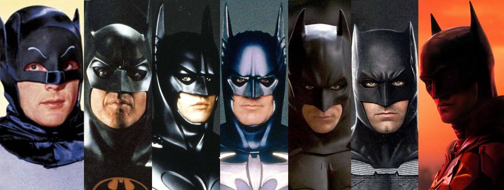

¿Donde aparece Batman?

Batman en el cine
El superhéroe ficticio Batman, que aparece en los cómics estadounidenses publicados por DC Comics, ha aparecido en varias películas desde su creación. Creado por Bob Kane y Bill Finger, el personaje protagonizó dos películas en serie en la década de 1940: Batman y Batman y Robin. El personaje también apareció en la película de 1966 Batman, que fue una adaptación cinematográfica de la serie de televisión de Batman de la década de 1960 protagonizada por Adam West y Burt Ward, quien también protagonizó la película. Hacia fines de la década de 1980, el estudio Warner Bros. comenzó a producir una serie de películas protagonizadas por Batman, comenzando con la película de 1989 Batman, dirigida por Tim Burton y protagonizada por Michael Keaton. Burton y Keaton regresaron para la secuela de Batman Returns en 1992, y en 1995, Joel Schumacher dirigió Batman Forever con Val Kilmer como Batman. Schumacher también dirigió la secuela de Batman & Robin en 1997, protagonizada por George Clooney . Batman y Robin fueron mal recibidos tanto por la crítica como por los fanáticos, lo que llevó a la cancelación de Batman Unchained.
Primera paricion de Batman
El personaje apareció por primera vez en Detective Comics #27, publicado en mayo de 1939.